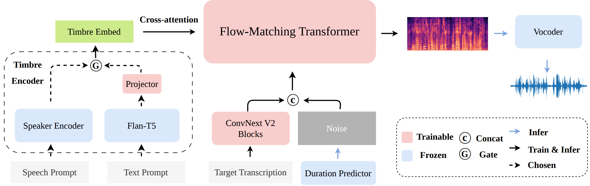

we propose CAST-TTS, a simple yet effective framework for unified timbre control. We leverage powerful pre-trained encoders to extract features from both the speech and text prompts. Subsequently, we project the text features into the same representation space occupied by the speech prompt embeddings. A single cross-attention mechanism then allows the model to use either of these representations to control the timbre. A multi-stage training strategy is adopted to optimize cross-modal alignment. Extensive ablation studies validate that the unified cross-attention mechanism is critical for achieving high-quality synthesis.
Model

Speech-Prompted TTS
prompt
text
F5-TTS
MaskGCT
ZipVoice
CAST-TTS(ours)
They then renewed their journey, and, under the better light, made a safe crossing of the stable roofs.
Nothing new. Weather unchanged. The wind freshens.
There is no class and no country that has yielded so abjectly before the pressure of physical want as to deny themselves all gratification of this higher or spiritual need.
I thank all who have loved me in their hearts, With thanks and love from mine.
What I mean is that I want you to promise never to see me again, no matter how often I come, no matter how hard I beg.
Text-Prompted TTS
caption
text
Parler-TTS
Capspeech
CAST-TTS(ours)
A middle-aged female adult delivers her speech with a slight air of expressiveness and animation. Her voice carries a slightly low-pitch, yet warm and inviting. The words flow at a moderate speed, creating an engaging and captivating atmosphere.
"She was ten years older," said her husband.
A young man, his age barely surpassing the twenties, delivers his speech in a moderately paced rhythm. His tone is very monotone, devoid of much expressiveness, yet his slightly high-pitched voice adds a unique touch. The overall effect is one of measured and calculated delivery.
The lately roaring winds are hushed into a dead calm; nature seems to breathe no more, and to be sinking into the stillness of death.
A middle-aged man delivers his speech with a measured pace, his tone taking on a mildly monotonous quality. The slightly low pitch of his voice lends an air of seriousness, as he delivers his words in a steady, unhurried manner.
Mrs Neverbend should come with me, or stay, if it so pleased her, in Gladstonopolis.
An elderly male, his voice a subtle whisper of time, delivers his message in a steady, albeit swift, pace. The monotone quality of his speech, tinged with a touch of sadness, lends an air of wisdom and experience to his words.
And by an ingenious set of circumstances the woman and all three of the men are brought into the same drawingroom at the same time.
A young female adult delivers her speech with great enthusiasm, her voice animated and high-pitched. Her slightly rapid pace adds a sense of urgency and energy to her words.
He was generally called in the profession and perhaps sometimes outside it supercilious jack, from the manner he had of moving his eyebrows when he was desirous of intimidating a witness.
In a moderately paced delivery, a teenager, characterized by her slightly low pitch, delivers her speech in a monotone tone, exhibiting an understated yet deliberate rhythm.
Citing, you know, scientific studies and and different works of literature that really convey the necessity of female ah anger, not only for the health of women but also for for the health of society if anyone wants to buy me this book for christmas.